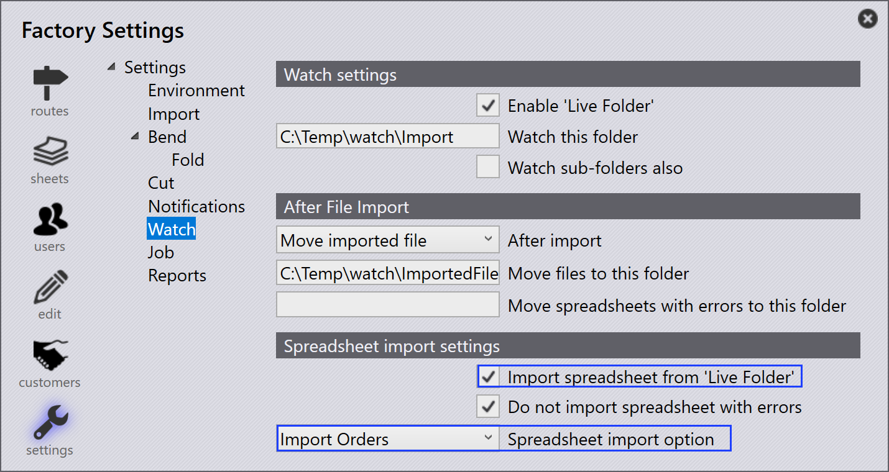

Importar pedidos
Los pedidos se pueden crear o importar mediante los siguientes métodos:
-
Importar pedidos desde archivos de hoja de cálculo.
-
Importar pedidos automáticamente mediante los ajustes de visualización.
-
Crear pedidos a partir de piezas existentes en la biblioteca de piezas.
-
Crear pedidos a partir de nestings estáticos de montaje.
Importar pedidos desde hoja de cálculo
-
Vaya a Open → Import Orders….
-
Los formatos de hoja de cálculo admitidos incluyen CSV, XLSX y XML.
-
Seleccione el archivo de hoja de cálculo requerido y haga clic en Open.
-
El proceso de importación es similar al flujo de trabajo de importación de tareas/montajes.
| También puede arrastrar y soltar directamente la hoja de cálculo en la página de Pedidos para importar pedidos. |
Importar pedidos mediante los ajustes de visualización
-
Habilite la opción Import spreadsheet from 'Live Folder' en Watch settings.
-
Seleccione Import Orders en la Spreadsheet import option.
-
Configure la ubicación de la carpeta desde la que se deben importar los pedidos.
-
El sistema supervisa continuamente la carpeta configurada.
-
Los archivos de hoja de cálculo recién añadidos se importan automáticamente en Pedidos.

| Para conocer los pasos de configuración detallados, consulte la documentación de Ajustes de visualización. |
Crear pedidos a partir de la biblioteca de piezas
-
Seleccione las piezas requeridas en la biblioteca de piezas.
-
Haga clic con el botón derecho y elija New… → Order para abrir el cuadro de diálogo New Orders.
-
Introduzca los datos requeridos, como la cantidad, la fecha de vencimiento y la prioridad.
-
Haga clic en OK para crear los pedidos.
-
El sistema cambia automáticamente a la página de Pedidos.
-
Los pedidos creados se muestran en la página de Pedidos listos para la creación de tareas.
Crear pedidos a partir de un montaje
-
Haga clic con el botón derecho en el montaje requerido.
-
Seleccione New… → Order para abrir el cuadro de diálogo New Orders.
-
Introduzca el Assembly count requerido.
-
Haga clic en OK para crear los pedidos.